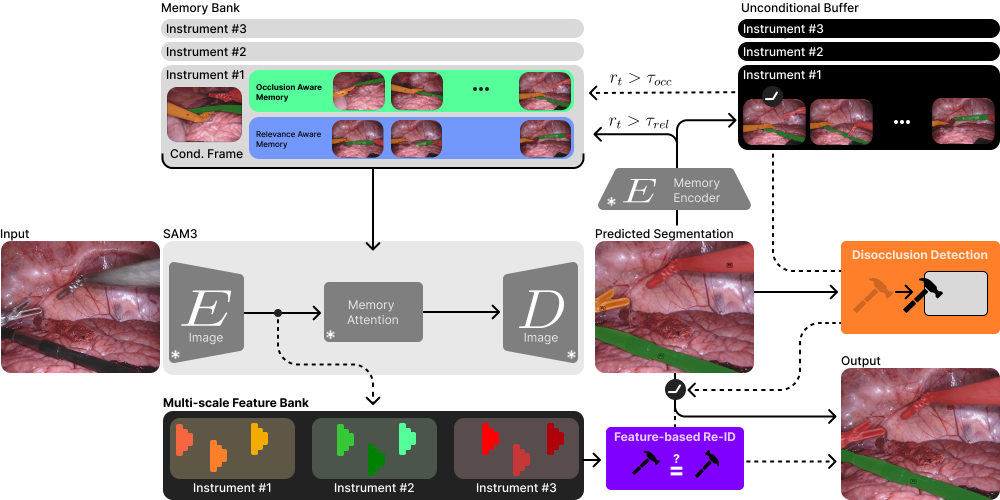
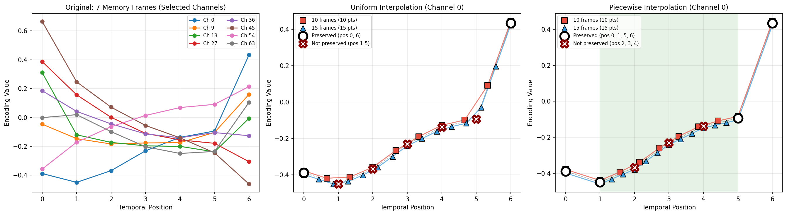
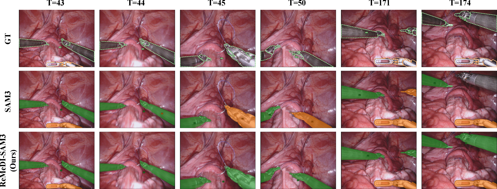
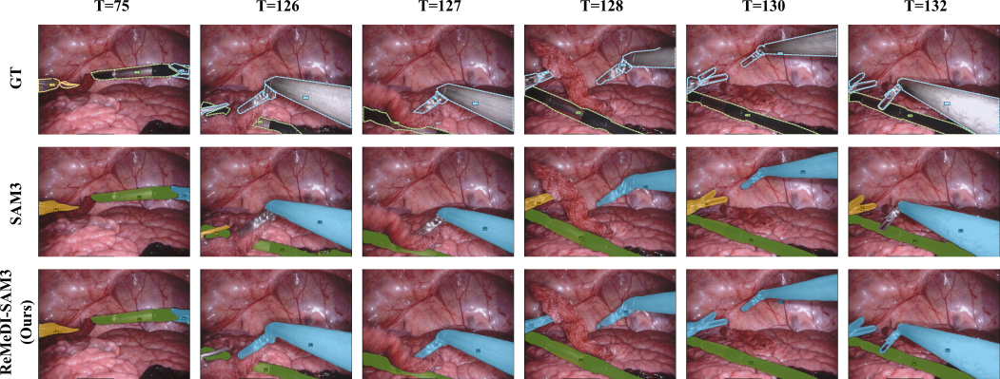

Accurate surgical instrument segmentation in endoscopy is crucial for computer-assisted interventions, yet remains challenging due to frequent occlusions, rapid motion, and long-term instrument re-entry. While SAM3 provides a powerful spatio-temporal framework for video object segmentation, its performance in surgical scenes is limited by indiscriminate memory updates, fixed memory capacity, and weak identity recovery after occlusions.
We propose ReMeDI-SAM3, a training-free extension of SAM3, that addresses these limitations through three components: (i) relevance-aware memory filtering with a dedicated occlusion-aware memory for storing pre-occlusion frames, (ii) a piecewise interpolation scheme that expands effective memory capacity, and (iii) a feature-based re-identification module with temporal voting for reliable post-occlusion identity disambiguation. Together, these components mitigate error accumulation and enable reliable recovery after occlusions. Evaluations on EndoVis17, EndoVis18, and CholecSeg8k under a zero-shot setting show mcIoU improvements of around 5.8%, 8%, and 2%, respectively, over vanilla SAM3, outperforming even prior training-based approaches.

We propose ReMeDI-SAM3: Refined Memory for Disambiguation of Identities with SAM3, a training-free extension of SAM3 to enhance temporal consistency and identity preservation in surgical videos. The pipeline is shown above. Our approach (1) restructures SAM3 memory into two components: (i) a

Long surgical procedures require long-horizon temporal context, yet SAM3 is constrained by a fixed set of temporal positional encodings. We propose a piecewise interpolation scheme over temporal positional encodings that preserves the boundary embeddings and samples new positions only in the interior region, enabling substantially larger memory capacity without retraining. Uniform interpolation, in contrast, distorts the learned boundary temporal priors.
Our method achieves state-of-the-art results on the EndoVis17, EndoVis18, and CholecSeg8k benchmarks under zero-shot settings, outperforming both vanilla SAM3 and prior training-based approaches. On EndoVis17, ReMeDI-SAM3 improves over vanilla SAM3 by 6% IoU and 5.8% mcIoU. The improvement is statistically significant (Wilcoxon p=0.023), with ReMeDI-SAM3 outperforming SAM3 on 7 of 8 sequences (95% cluster-bootstrap CI [0.64, 8.13]) and reducing sequence-level standard deviation by 20% (74.50 ± 14.13 vs 69.04 ± 17.75 mcIoU). On EndoVis18, we obtain gains of 3.5% IoU and 8% mcIoU. The larger mcIoU gain reflects improved suppression of false positives for absent instruments via our identity-aware design. On CholecSeg8k, a broader surgical semantic segmentation benchmark, we observe consistent zero-shot gains of 1% IoU and 2% mcIoU. SAM-family methods use a first-appearance ground-truth mask prompt; specialist methods follow their original settings.
| Method | Challenge IoU | IoU | mcIoU |
|---|---|---|---|
| ISINet | 55.62 | 52.20 | 28.96 |
| S3Net | 72.54 | 71.99 | 46.55 |
| MATIS Frame | 68.79 | 62.74 | 37.30 |
| TP-SIS | 63.37 | 63.37 | 52.74 |
| TrackAnything | 67.41 | 64.50 | 62.97 |
| PerSAM (Zero-Shot) | 42.47 | 42.47 | 41.80 |
| SurgicalSAM | 69.94 | 69.94 | 67.03 |
| SP-SAM | 73.94 | 73.94 | 71.06 |
| MA-SAM2 (Zero-Shot) | 62.49 | 62.49 | 59.89 |
| SAM3 (Mask, Zero-Shot) | 78.08 | 70.76 | 68.42 |
| ReMeDI-SAM3 (Ours) | 81.34 | 76.65 | 74.29 |
| Method | Challenge IoU | IoU | mcIoU |
|---|---|---|---|
| ISINet | 73.03 | 70.94 | 40.21 |
| S3Net | 75.81 | 74.02 | 42.58 |
| MATIS Frame | 82.37 | 77.01 | 48.65 |
| TP-SIS | 84.92 | 83.61 | 65.44 |
| TrackAnything | 65.72 | 60.88 | 38.60 |
| PerSAM (Zero-Shot) | 49.21 | 49.21 | 34.55 |
| SurgicalSAM | 80.33 | 80.33 | 58.87 |
| SP-SAM | 84.24 | 84.24 | 65.71 |
| SAM3 (Mask, Zero-Shot) | 88.04 | 81.82 | 66.46 |
| ReMeDI-SAM3 (Ours) | 88.10 | 85.34 | 74.37 |
| Method | Challenge IoU | IoU | mcIoU |
|---|---|---|---|
| PerSAM (Mask) | 33.67 | 33.54 | 25.88 |
| SAM3 (Mask) | 88.33 | 87.81 | 79.37 |
| ReMeDI-SAM3 (Ours) | 89.68 | 89.07 | 81.25 |
Efficiency & Scalability. SAM3 already maintains per-object memory by fusing per-object masks with image features; ReMeDI differs in using a larger memory bank and a different frame-selection strategy. On EndoVis18 with a single RTX 4090, ReMeDI incurs modest overhead compared to SAM3: 6,299 vs 6,010 MB peak GPU memory (+4.8%), 4,820 vs 4,767 MB average GPU memory (+1.1%), and 351.1 vs 329.7 ms/frame latency (+6.5%). The expanded memory bank (M=15 vs 7) adds only ~5% to memory-attention cost since compute is dominated by the image encoder. To ensure scalability, the unconditional buffer has a maximum size of 15 while the ReID bank is capped at 15 entries per object.

Qualitative comparison of SAM3 and ReMeDI-SAM3 on a challenging occlusion and reappearance case in EndoVis17. After the orange-labeled instrument becomes fully occluded at T=44, SAM3 exhibits identity drift and incorrectly assigns the orange identity to the visible green instrument, with this mislabeling persisting across subsequent frames. In contrast, ReMeDI-SAM3 suppresses such false-positive identity propagation during the occlusion and correctly re-identifies the true instrument upon reappearance.

Qualitative comparison on EndoVis17 showing instrument turnover. The yellow instrument (Bipolar Forceps) exits the scene at T=75, and a second blue instrument (Prograsp Forceps) enters later (T=126–132). ReMeDI-SAM3 briefly misses the new instrument at T=126 but correctly assigns the blue identity once sufficient evidence accumulates. In contrast, SAM3 preserves the old yellow identity after occlusion, confusing the new instrument with the occluded yellow one.
| Method | Challenge IoU | IoU | mcIoU |
|---|---|---|---|
| Vanilla SAM3 | 78.08 | 70.76 | 68.42 |
| + RM | 79.94 | 73.74 | 72.03 |
| + RM + OM | 80.93 | 74.46 | 72.53 |
| + RM + OM + ReID | 80.58 | 75.84 | 73.58 |
| + RM + OM + ReID + ME | 81.34 | 76.65 | 74.29 |
RM: relevance-aware memory, OM: occlusion-aware memory, ReID: feature-based re-identification, ME: memory expansion. All components are jointly essential, yielding a total improvement of 6.0% IoU and 5.9% mcIoU over vanilla SAM3.
| Memory Size | Challenge IoU | IoU | mcIoU |
|---|---|---|---|
| 7 | 80.58 | 75.84 | 73.59 |
| 15 | 81.34 | 76.65 | 74.29 |
| 20 | 80.77 | 76.11 | 73.57 |
| Method | Challenge IoU | IoU | mcIoU |
|---|---|---|---|
| Uniform | 80.13 | 75.66 | 74.20 |
| Piecewise | 81.34 | 76.65 | 74.29 |
The work described in this paper was conducted in the framework of Graduate School 2543/1 "Intraoperative Multi-Sensory Tissue Differentiation in Oncology" (project ID 40947457) funded by German Research Foundation (DFG - Deutsche Forschungsgemeinschaft). This work has been supported by the Deutsche Forschungsgemeinschaft (DFG) – EXC number 2064/1 – Project number 390727645 and SFB 1233, TP 2, Project number 276693517. The authors thank International Max Planck Research School for Intelligent Systems (IMPRS-IS) for supporting Valay Bundele and Mehran Hosseinzadeh. We also thank Jan-Niklas Dihlmann for redesigning the pipeline figure.
@inproceedings{bundele2026remedi,
author = {Bundele, Valay and Hosseinzadeh, Mehran and Lensch, Hendrik P. A.},
title = {ReMeDI: Refined Memory for Disambiguation of Identities with SAM3 in Surgical Segmentation},
booktitle = {Medical Image Computing and Computer Assisted Intervention (MICCAI)},
year = {2026},
}